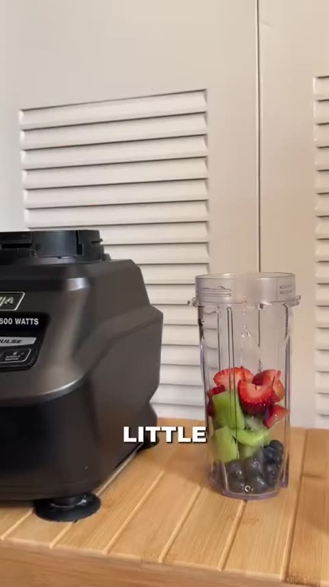
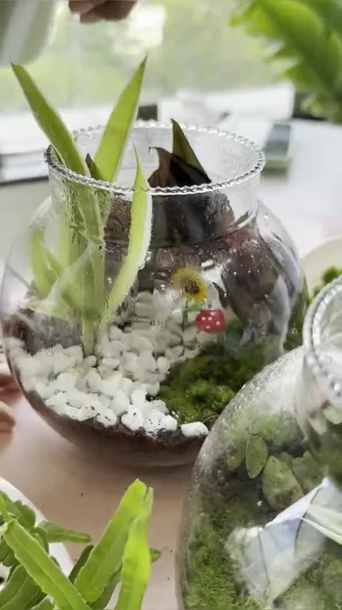

// Marketing portfolio
Hi, I'm Yugeshwari.
Digital marketer: strategy, content, analytics
7years of experience
in digital marketing
I build marketing that people notice and numbers can prove. Strategy, content and performance reporting across social, email and paid search for consumer brands. M.S. in Digital Marketing at Sacred Heart University, graduating December 2026.
- Marketing strategy
- Visual storytelling
- Social and content
- Paid search
- Analytics and reporting
Windsor, Connecticut · Open to remote roles
Move your cursor or tap the pond.
- 6.47%search CTR on a $9/day client campaign
- +18%Instagram community growth in 3 months
- 112Kimpressions from one café and nursery collaboration video
// Selected work
Campaigns and results
 Paid search
Paid searchGoogle Ads campaign for a pet wellness brand
6.47%CTR
$0.60average CPC

Strategy and socialLaunching TikTok and growing Instagram
+18%Instagram in 3 months
81%reach from non-followers

Short-form videoCross-brand campaign: café and plant nursery
112Kimpressions
18.3Kengagements
// Connect with me
Let's connect.
Looking for a social-first marketer who plans, shoots and measures? I'd like to hear about the role.